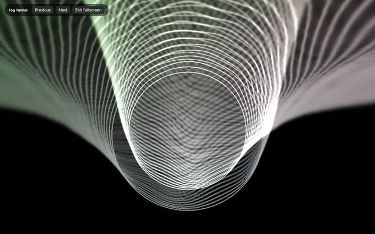
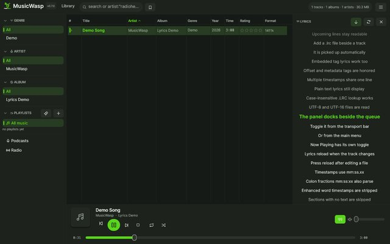
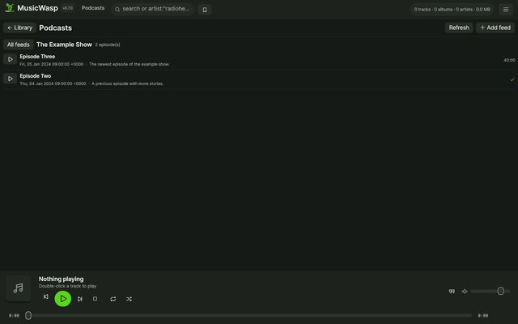
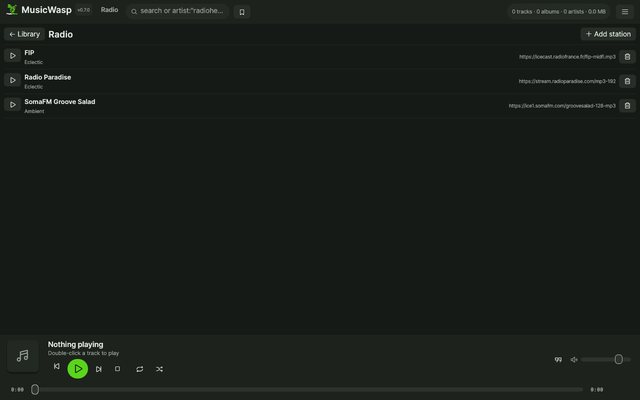

Fast local library
Incremental background scans, SQLite indexing, backup and restore, advanced field search, saved searches and persistent track columns.
Linux · Windows · macOS · GPL-3.0
A library, player and tag editor in one native app for Linux, Windows and macOS. Scan your folders, then browse, search, play, follow synchronized lyrics, fix tags, build playlists, subscribe to podcasts, stream radio and run MilkDrop visuals.

Everything in one window
Incremental background scans, SQLite indexing, backup and restore, advanced field search, saved searches and persistent track columns.
Gapless playback, crossfade, ReplayGain, 10-band EQ, queue management and selectable output.
26 bundled MilkDrop presets, including Ryan Geiss classics, rendered on wgpu. Pick one preset or shuffle, in a library panel, behind Now Playing or fullscreen.
Show sidecar .lrc lyrics with the active line highlighted and auto-scrolled. Click a line to seek, or fall back to embedded tag lyrics and plain text.
Subscribe to RSS/Atom podcast feeds with per-episode progress, or add internet radio stations and stream them directly in the same player.
Edit properties in place, set per-track ReplayGain, batch-fix metadata, auto-tag from MusicBrainz or an AcoustID fingerprint, organize files and manage artwork with undo.
Nested playlist folders, smart rules, M3U import/export, ratings, play counts and listening filters.
English, French, German and Spanish; fifteen skins, custom JSON themes, background images and a live colour editor; compact and album-art layouts.
Runs on Linux, Windows and macOS. Mini player, Linux MPRIS and tray controls, native Wayland drag-and-drop, session restore and ListenBrainz scrobbling.
Look around
Click any thumbnail to open it full size. Use the arrow keys to browse.






Get started
$ sudo apt install libasound2-dev pkg-config
$ cargo build --release
$ ./scripts/install-desktop.shRelease archives include the binaries, desktop entry, icons, sample skins and translation catalogues.
Download for Linux> cargo build --releaseMSVC Rust toolchain only. SQLite is bundled and audio uses WASAPI.
Download for Windows$ cargo build --releaseApple Silicon and Intel builds. Unsigned first launches may need Finder's Open context menu.
Download for macOSCommon questions
Yes. MusicWasp is open source under the GNU GPL v3, with no subscription, account or paid tier.
MusicWasp runs on Linux, Windows and macOS. macOS releases are available for Apple Silicon and Intel.
Yes. Your library, playback, tag editing, playlists and lyrics stay local. Network access is only used for features you request, such as podcast feeds, radio streams, cover art, MusicBrainz auto-tagging and AcoustID fingerprints.
Yes. Subscribe to RSS or Atom podcast feeds with per-episode progress, or add direct MP3, OGG and AAC radio stream URLs.
Yes. Place an .lrc file beside the audio file or store lyrics in the file tag. Synchronized lines highlight and auto-scroll, and clicking a line seeks to that point.
MusicWasp is a local music library and player, not a streaming service. It manages and plays files you own and does not require a Spotify or Apple Music account.